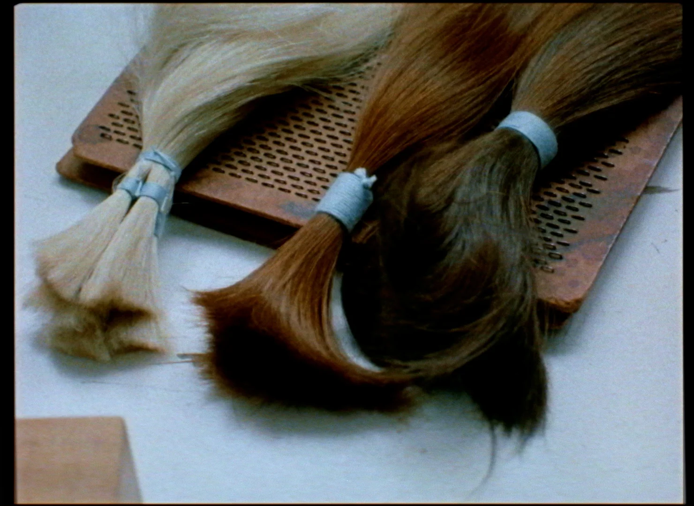
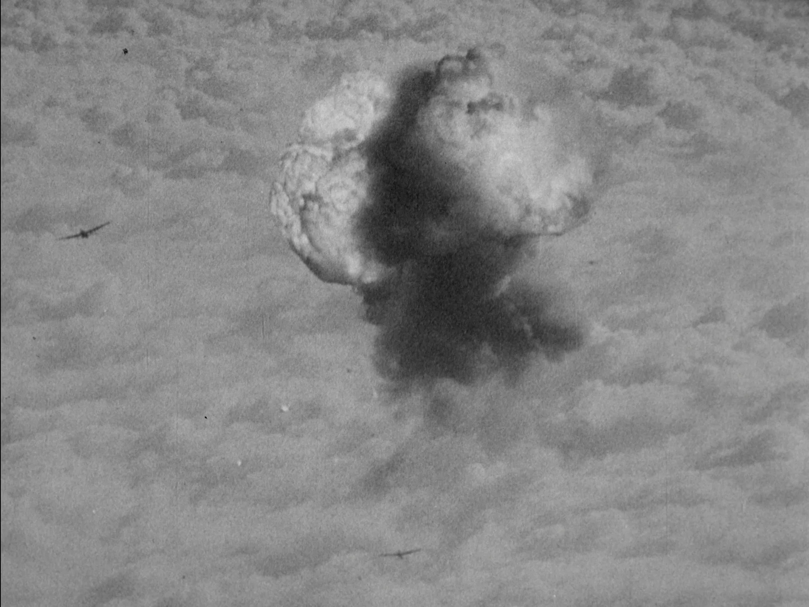
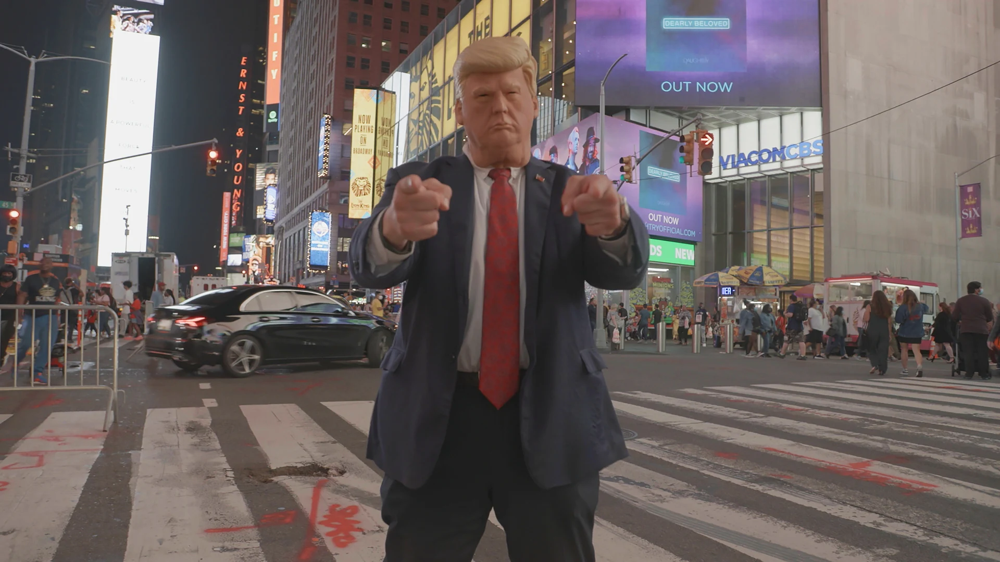
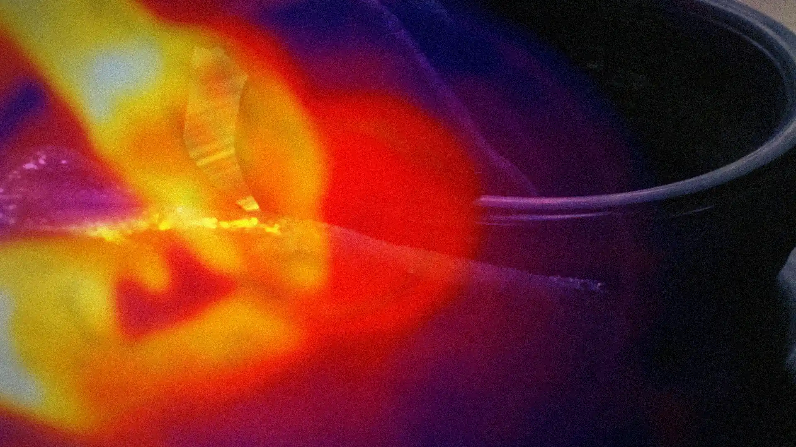
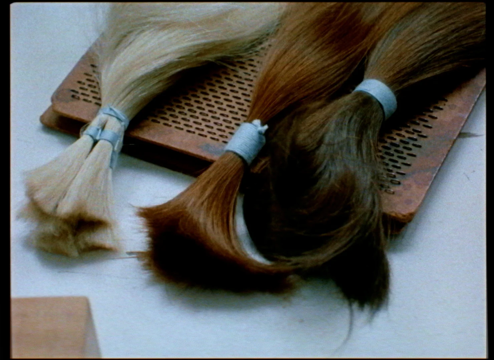
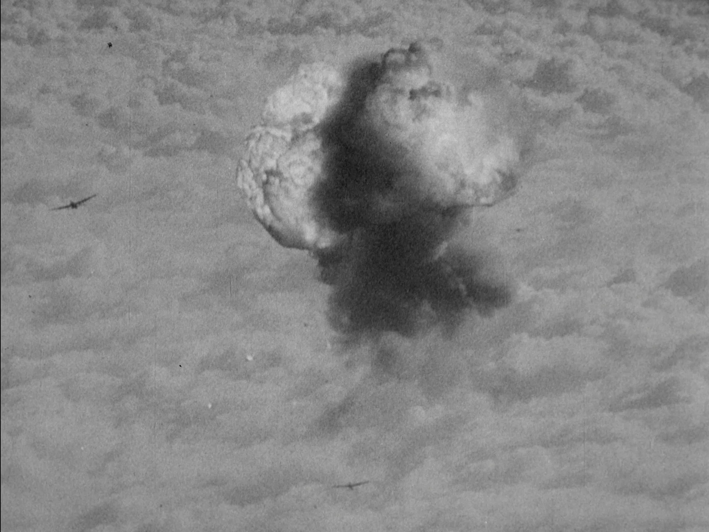
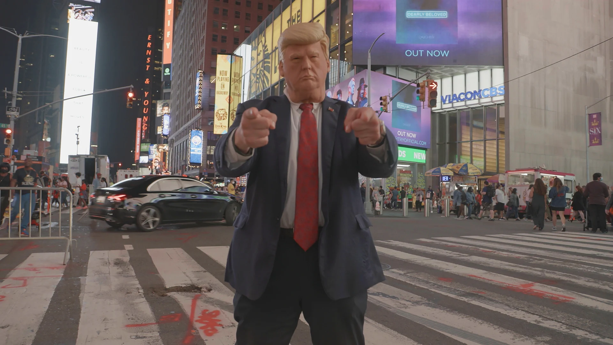
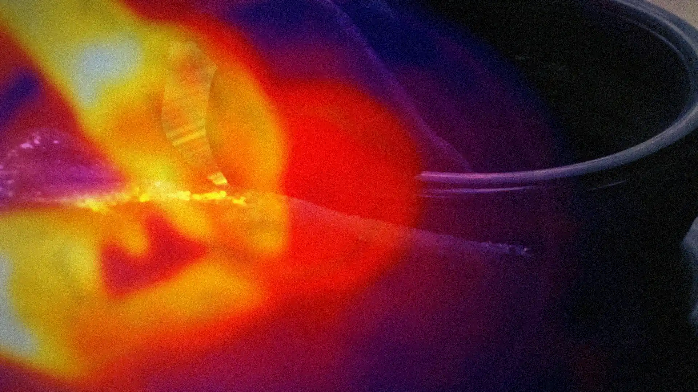

-
Sans Soleil
Widely considered the foundational essay film, Sans Soleil is a contemplative journey through memory and time through distant lands – Japan, Guinea-Bissau, and the Cape Verde islands – blending personal reflections with observations on modern existence.
Chris Marker France, 1982 110' -
Juste Une Mouvement
Juste Une Mouvement by Vincent Meessen revisits Jean-Luc Godard’s La Chinoise through the story of Omar Blondin Diop, blending essay, biography, and political cinema into a layered recontextualization.
Vincent Meessen Belgium, 2021 108' -
Twenty-Four Cinematic Points of View of a Factory Gate in China
An investigation of a factory gate in China leads to an in depth reflection on the history of cinema and capitalism.
Ho Rui An China, 2023 25' -
Workers Leaving the Googleplex
A surreal investigation into hidden labour at Google, where access, surveillance, and exclusion expose the deeper hierarchies shaping the digital economy and corporate power.
Andrew Norman Wilson US, 2011 11' -
Arbeiter verlassen die Fabrik
A spiritual sequel to the Lumière brothers’ iconic 1895 film, Harun Farocki’s Arbeiter verlassen die Fabrik traces how the image of workers exiting factories has persisted—and evolved—through cinema’s history.
Harun Farocki Germany, 1995 36' -
Was ist Los?
In Was ist los? Harun Farocki dissects media narratives and televised imagery in reunified Germany, exposing how everyday broadcasts shape public perception, ideology, and the construction of “reality.”
Farocki Germany, 1991 60' -
Gegen-Musik
Gegen-Musik, originally intended as a two-screen installation, sees Harun Farocki examine surveillance footage, exposing how the interplay of image and sound structures perception, authority, and control.
Farocki Germany, 2004 23' -
Getty Abortions
How do the media portray the images we associate with abortion? And how do these affect women who want to have one? An impressive blend between desktop and personal aesthetics.
Francis Kabisch Germany, Austria, 2023 22' -
Preemptive Listening
What's a siren? What has it been? What can it be? An exploration of the siren in a myriad of forms.
Aura Satz UK, 2024 90' -
Home Invasion
What happens when our homes and our dreams have been invaded? An exploration of the history of the doorbell and the implications of surveillance footage.
Graeme Arnfield US, 2024 90' -
Coma
Blending animation and live action to tell the story of a teenage girl trapped in her home. Created during the COVID-19 pandemic, a surreal, nightmarish world unfolds. Perhaps only an essay film could capture to confusion of these years?
Bertrand Bonello France, 2022 80' -
Free to Choose
A speculative sci-fi journey through neoliberalism’s promises and failures, where time travel becomes a metaphor for credit, access, and the cost of economic freedom.
Bahar Noorizadeh UK, 2023 35' -
An Asian Ghost Story
A haunting meditation on Hong Kong’s role in Cold War trade, where human hair becomes a ghostly link between imperial histories, migration, and spectral memory.
Bo Wang Hong Kong, 2023 37' -
Room 404
ERROR: ROOM 404 A POTENTIAL THREAT – the courage and doubt of artists continuing to create in uncertain times, resisting the rising media control in Hong Kong.
Elysa Wendi Hong Kong, 2024 29' -
The Natural History of Destruction
Looking at archival footage of the British targeting of German civilians during WWII, moral ambiguities and the silence surrounding these actions are explored.
Sergei Loznitsa Poland, 2022 110' -
sr
Traversing global landscapes and human activities through a recurring giraffe motif, themes of power, culture and perception are explored.
Lea Hartlaub Germany, 2024 110' -
Letters from Panduranga
Explores the erasure of indigenous Cham culture amid Vietnam’s nuclear power plans through a letter exchange between a man and a woman.
Nguyen Trinh-ti Vietnam, 2015 35' -
How to Improve the World
Do you trust sound or image better? Listen closely to the sounds and images of the Indigenous peoples in the Central Highlands of Vietnam.
Nguyen Trinh-ti Vietnam, 2021 47' -
Where can I get Lost?
Wanderers of all paths of life gather through the lens of the anthropological filmmaker, in search of a world larger than the one they know.
Mattijs van de Port Netherlands, 2024 70' -
Man Number 4
Zooming into a disturbing image of detained Gazans circulating on social media, our passive consumption and complicity of the genocide is questioned.
Miranda Pennell UK, 2024 10' -
Capricorn Sunset
Exploring boundless space for meaning-making. This essay film opens our eyes to the interplay of images, memory, and personal interpretation.
Johannes Binotto Switzerland, 2023 5' -
A Fidai Film
Red silhouettes draw an alternative future in looted Palestinian archival footage. A compelling film re-interpreting a past and possible future.
Kamal Aljafari Palestine, 2024 78' -
Henry Fonda for President
A meditation on Henry Fonda’s screen legacy and the stories America tells about itself — idealism, doubt, and the distance between image and reality.
Alexander Horwath US, 2024 180' -
Face Value
Johan van der Keuken’s formally distinct essay film navigates the politics of vision across Europe, but also experiments with cinematic portraiture in wild ways. Through a mosaic of vignettes—of faces, places, and voices—this classic essay film explores the desire and fear of being seen, the struggle for self-perception, and the tensions within shifting cultural landscapes. A prescient film in many ways.
Johan van der Keuken Netherlands, 1991 120' -
My Want of You Partakes of Me
A poetic and philosophical reflection on (un)ethical digestion, revealing the interdependence of the human body on its surroundings, for “all that you change changes you”.
Sasha Litvintseva & Beny Wagner UK, 2024 55' -
Perpetual Radiance
A poetic reflection on artificial light and the disappearance of night. In this imagined future, nature flickers in pink and black – disrupted, studied, and slowly fading.
Michela Mellido Netherlands, 2024 14' -
To the Earthern Red
“The enduring material bond between soil and soul”; entanglement of the earth’s materiality and the inner world, poetically reflected upon by a young Czechian artist.
Nika Pećarina Netherlands, 2022 19' -
Mariam Jafri vs Maryam Jafri
Mariam Jafri vs. Maryam Jafri explores identity and authorship through a sculptural work that shifts from object to photo to video, each stage marked by superimposed watermarks. Jafri's self-reflection questions the commodification of art and the fluidity of value in a global context.
Maryam Jafri Austria/Canada, 2019 9' -
Haunted, the Hollow
Exploring industrial decline’s lingering impact through past trauma – Haunted, the Hollow reflects on memory, community, and the uncertainty of the future.
Veronica Munteau, Karin Nakajima, Sara Ouljour Netherlands, 2025 13' -
Searching for the Perfect Gentleman
How can one travel the world by still staying put? The journey of discovering the story behind a poster hanging at an African barbershop’s window.
Lena Windisch Germany, 2019 10' -
In Praise of Slowness
The ears tell the eyes where to look.” An exploration of how waiting and listening creates stillness, in an effort to reverse the speed of capitalist rhythms.
Hicham Gardaf UK/Italy, 2024 17' -
A Letter from Yene
A reflective portrait of life in a Senegalese coastal town, where shifting landscapes prompt conversations about the environment, labour, and our shared place in it.
Manthia Diawara Senegal, 2022 50' -
De L’autre coté
An emotional exploration on border politics, relevant now more than ever. Personal, plural and captivating in its ability to make us listen and watch carefully.
Chantal Akerman Belgium, 2006 100' -
The Cave Mouth and The Giant Voice
Exploring the memory of Okinawan islander Yogi-San and his experiences sheltering from the 1945 US Naval bombardment, the resonant space of the cave turns war memory into a way of listening.
Rupert Cox and Angus Carlyle UK, 2015 10' -
Kapotte Muziek – Track 1
Rather than documentary or naturalistic, sound artist Toshiya Tsunoda’s field recordings explores the relation between space and cognition, the depth of the landscape and the vital breathing of things.
Toshiya Tsunoda Netherlands, 2004 7' -
Where no bell rings (2023) by David Petráš
Practices of witchcraft and healing rituals in folk songs and stories of survival from older women living in remote locations on the border zone of Slovakia, Ukraine, and Romania become transition zones to a mythical, unknown world.
, -
Message from Mukalap
Through a multilingual response to a sound recording from a man called Mukalap, in the no longer living language !ora, colonial legacies echo through.
Judith Westerveld Netherlands, 2021 15' -
The Sending of the Crows
An audiovisual meditation of a language and culture from a colonial past, “moving through time, reflecting on the truth of the people forgotten”.
Judith Westerveld Netherlands, 2024 15' -
Nowhere Near
Nowhere Near by Miko Revereza is a poignant essay film that explores displacement and the immigrant experience. Through personal meditations and striking visuals, Revereza reflects on the complexities of belonging and the struggle to bridge cultural gaps.
Miko Revereza, 2023 96' -
Disquiet
Revered essay filmmaker Lis Rhodes' latest work opens with a haunting reference to the atomic bomb in Hiroshima, setting the tone for an essay film that explores the intersections of sound, power, and history. Through fragmented imagery and often jarring audio, Rhodes incites us to reflect on the lingering impacts of violence and the structures of control in modern life.
Lis Rhodes UK, 2022 80'


 






